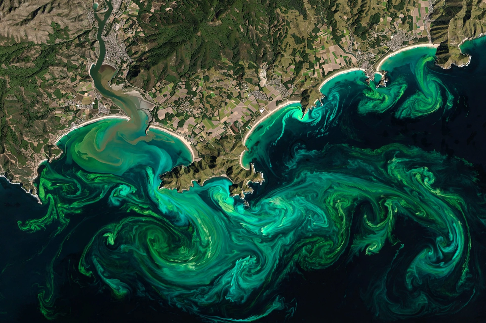

From Wikipedia, the free encyclopedia

Upwelling is an oceanographic phenomenon in which wind-driven motion of dense, cooler, and usually nutrient-rich water from deep in the ocean rises toward the surface, replacing the warmer, nutrient-depleted surface water pushed away by the wind. The nutrient-rich upwelled water stimulates growth of phytoplankton, making upwelling regions among the most productive marine ecosystems on Earth.
The most important type is coastal upwelling. When wind blows along a coast with the coastline on the appropriate side, the Coriolis effect deflects the surface current offshore (Ekman transport), and deep water rises to take its place. This occurs along the western coasts of continents in the subtropics and mid-latitudes, where trade winds and eastern boundary currents flow equatorward. Equatorial upwelling occurs where trade winds drive surface waters apart at the equator, and seasonal upwelling is driven by monsoon winds in places such as the Arabian Sea off Oman and Somalia.
The four great eastern boundary upwelling systems are associated with the California Current, the Canary Current, the Benguela Current off Namibia, and the Humboldt (Peru) Current off South America. Though such zones cover well under one percent of the ocean's surface, they support a disproportionate share — by some estimates a quarter — of the world's marine fish catch, including vast schools of anchovies and sardines that feed seabirds, seals and larger fish. The Peruvian system, the most productive of all, periodically collapses during El Niño events, when warm surface water suppresses the upwelling and fisheries crash.
The opposite process, downwelling, occurs where surface waters converge and sink, carrying oxygen to depth but few nutrients.